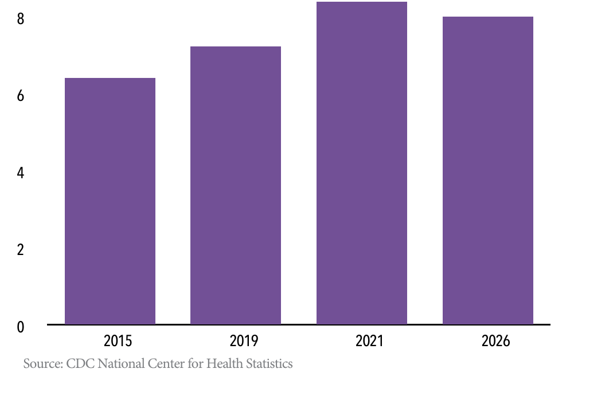

The story
Adolescence is a crucial phase for brain development. Screen time among adolescents has surged in the last decade and a half according to the CDC. We investigated the effects on mental health both across the country and in Missouri, ranking 38th for youth experiencing major depression by Mental Health America.
According to the CDC's National Center for Health Statistics, teens who use screens for four or more hours a day report higher rates of anxiety (27.1%) and depression (25.9%) compared to those who use them less than four hours (12.3% and 9.5%).
Teens are especially vulnerable because their emotional brain areas are very active while their prefrontal cortex continues maturing until about age 24 or 25, says Dr. Janis Drawn from MU Psychological Services Clinic. She points out that screen use late at night interferes with sleep, worsening depression and anxiety in a "vicious cycle."
The screentime surge: tracking hours from 2015 to 2026
Measured in hours, average screen time grew steadily from approximately six and a half hours in 2015 to a peak of well over eight hours in 2021. While the total dipped slightly by 2026, it remains significantly higher than pre-pandemic levels.

Your results: screen time and mental health
Teens who use screens for four or more hours a day report higher rates of anxiety and depression than teens who use them less than four hours, according to the CDC's National Center for Health Statistics.
| Daily screen time |
Anxiety |
Depression |
| Less than 4 hours |
12.3% |
9.5% |
| 4 hours or more |
27.1% |
25.9% |
Source: CDC, National Center for Health Statistics
Average daily screen time, by year
| Year |
Average screen time, in hours |
| 2015 |
About 6.5 |
| 2019 |
About 7.3 |
| 2021 |
About 8.5 |
| 2026 |
About 8.0 |
These values are read approximately from the bar heights in the print graphic. The graphic itself states the trend in words: about six and a half hours in 2015, a peak of well over eight hours in 2021, and a slight dip by 2026 that still leaves screen time significantly higher than before the pandemic.
Source: CDC, National Center for Health Statistics